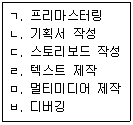

전자출판기능사 (2014-04-06 기출문제)
1과목: 출판론
1. 그리드 시스템에 관한 설명으로 옳지 않은 것은?
- 칼럼과 필드수가 많아질수록 정적인 구성이 되고, 적어질수록 동적인 구성이 된다.
- 칼럼과 필드수가 많아질수록 레이아웃은 복잡해지고 지나치면 가독성에 장애를 발생시킬 수 있다.
- 레이아웃을 조직화하는 하나의 방편이며, 지면을 종횡으로 분할하여 디자인에 응용하는 가상의 선이다.
- 주관적이고 감각적인 디자인에 과학적이고 조직적인 체계를 부여하여 보다 객관적이고 기능적인 디자인을 얻을 수 있다.
(정답률: 68%)

2. 금속판인 알루미늄판 등에 감광액을 손으로 칠한다는 뜻으로 스폰지나 롤러 등을 이용해 주로 디아조 감광재료를 판재에 직접 도포하는 방식의 제판법을 무엇이라고 하는가?
- PS판 제판
- 그라비어 제판
- 스크린 제판
- 와이프온 제판
(정답률: 66%)
3. 출판 유통이란 다음 중 어떠한 과정을 말하는가?
- 도매상에서 소매상으로 판매하는 과정
- 출판사에서 대리점으로 소유권을 이전시키는 과정
- 인터넷 서점에서 할인 판매하는 과정
- 제작된 출판물의 소유권을 소비자에게 이전시키는 과정
(정답률: 71%)
4. 세계에서 가장 오래된 목판인쇄본은?
- 훈민정음
- 직지심체요절
- 고금상정예문
- 무구정광대다라니경
(정답률: 90%)
5. 1895년 미국의 월간 문예지인 bookman이 가장 잘 팔리는 여섯 권의 신간서 리스트를 게재한데서부터 유래한 말로, 원래 어떤 기간 중에 발행된 책 중에서 예상 이상으로 잘 팔리는 책에 쓰인 말은?
- 핫셀러(hot seller)
- 패스트셀러(fast seller)
- 베스트셀러(best seller)
- 스테디셀러(steady seller)
(정답률: 82%)
6. 국판 도서의 크기는?
- 128×182㎜
- 148×210㎜
- 182×257㎜
- 210×297㎜
(정답률: 65%)
7. 책의 각부 명칭 중 서책을 엮은 쪽 또는 꿰맨 쪽 바깥 부분을 무엇이라고 하는가?
- 홈
- 등
- 표지
- 귀발이
(정답률: 85%)
8. 노랑색(Yellow) 분해 판을 만들기 위해 사용되는 색분해용 필터는?
- Red 필터
- Green 필터
- Blue 필터
- White 필터
(정답률: 59%)
9. 다음 중 출판의 기능으로 가장 거리가 먼 것은?
- 오락 기능
- 보도 기능
- 지식의 보급과 교육 기능
- 문화의 창조와 전승 기능
(정답률: 77%)
10. 다음 중 양장 제책공정에서 다듬질된 책의 3면 끝을 갈아서 그 부분에 금가루 등을 묻히는 가공법을 무엇이라 하는가?
- 배킹
- 접지뽑기
- 표지싸기
- 마구리장식
(정답률: 77%)
11. 다음 인쇄방식 중 일반적으로 잉크의 피막 두께가 가장 얇은 것은?
- 오프셋 인쇄
- 볼록판 인쇄
- 스크린 인쇄
- 그라비어 인쇄
(정답률: 53%)
12. 아닐린 인쇄라고도 하는데, 주로 골판지, 종이백 등의 포장 인쇄에서 널리 사용되고 있으며, 환경오염이 적은 인쇄방식은?
- 스크린 인쇄
- 플렉소그래피 인쇄
- 그라비어 인쇄
- 드라이 오프셋 인쇄
(정답률: 64%)
13. 출판 편집자가 갖추어야 할 요건이 아닌 것은?
- 사회의 흐름에 민감해야 한다.
- 인쇄 작업을 혼자 해낼 수 있어야 한다.
- 여러 필자들의 특성을 파악하고 있어야 한다.
- 필자의 원고를 정확하게 판독할 수 있어야 한다.
(정답률: 95%)
14. 스크린 인쇄 제판 시 상대습도가 60% 이었을 때 6분이 적정노출시간이라면 상대습도가 70%일 대 얼마의 노출이 필요한가?
- 2분
- 4분
- 6분
- 8분
(정답률: 66%)
15. 일반적으로 단행본의 뒷지면(back matter)에 속하지 않는 것은?
- 부록
- 후기
- 일러두기
- 참고문헌
(정답률: 87%)
16. 제책을 하는 목적으로 볼 수 없는 것은?
- 잉크의 전이를 좋게 한다.
- 인쇄된 종이를 흩어지지 않게 한다.
- 읽기에 편리하도록 하기 위한 것이다.
- 문화의 기록, 지식의 원천으로서 오래 보존하기 위한 것이다.
(정답률: 88%)
17. 출판에 있어서 기획(Planning)에 관한 설명으로 옳지 않은 것은?
- 출판물의 내용이나 형태를 비롯한 출판물 제작계획 전반을 말한다.
- 편집기획 또는 출판기획의 준말이며, 편집방침을 구체화시키는 작업이다.
- 지식과 정보의 틈을 찾아 무엇을 출판할 것인가를 구상하여 계획을 세우는 것이다.
- 소재의 선택과 배열에 따라 창작성이 있는 편집저작물을 만들어 내는 것을 뜻하며 철저한 교정으로 틀린 글자를 완벽하게 제거하는 과정이다.
(정답률: 85%)
18. 오프셋 인쇄란 어떤 방식의 인쇄를 의미하는가?
- 직접 인쇄
- 소량 인쇄
- 간접 인쇄
- 정전 인쇄
(정답률: 58%)
19. 도서에 국제적인 규칙에 따라 단품번호를 붙이고 이것을 사용해서 도서와 서지정보, 유통업무, 예를 들면 도서목록의 편집, 검색, 재고관리, 주문처리 등의 컴퓨터화(정보화)를 도모하기 위해 국제적으로 통용될 수 있도록 체계화한 번호제도는?
- ISBN
- DOI
- EDI
- VAN
(정답률: 85%)
20. 판매의 처음 시작은 그리 요란하지 않지만, 언제 어디서든 꾸준하게 팔리는 책 또는 견실하게 팔리는 책을 지칭하는 것은?
- 무크(mook)
- 패스트셀러(fast seller)
- 베스트셀러(best seller)
- 스테디셀러(steady seller)
(정답률: 79%)
2과목: 전자 출판
21. 출판 전산화 시스템의 주변기기 중 그림이나 사진을 디지털 신호로 바꾸어 컴퓨터에서 활용하도록 만드는 화상 입력기는?
- 스캐너
- 출력기
- 모니터
- 프린터
(정답률: 92%)
22. 다음 중 전자출판시스템에 관한 설명으로 적절하지 않은 것은?
- 출판물을 제작하기 위한 모든 전자기기를 말한다.
- 컴퓨터와 주변기기를 사용하여 원고의 입력, 편진, 출력 제판 등의 인쇄 직업 직전까지 인쇄용 원고를 만드는 작업을 말한다.
- 전자출판시스템은 데스크탑 퍼블리싱이나 DTP시스템 등의 용어로 불리기도 한다.
- 전자출판시스템을 임포지션 레이아웃이라고도 한다.
(정답률: 59%)
23. 링크의 구조 중 정보제공의 난이도가 높아지는 순서대로 나타낸 것은?
- 계층적링크→순차적링크→격자형링크→구조적링크
- 격자형링크→계층적링크→구조적링크→순차적링크
- 순차적링크→계층적링크→격자형링크→구조적링크
- 구조적링크→계층적링크→격자형링크→순차적링크
(정답률: 79%)
24. 다음 중 IBM 컴퓨터에서 사용하는 한글 프로그램의 한글 원고와 매킨토시 컴퓨터에서 사용하는 Quark익스프레스의 한글 원고가 호환이 되지 않고 서로 다른 형태로 저장되는 주된 이유는?
- 컴퓨터 제작 회사가 다르기 때문
- 사용하는 한글 코드가 서로 다르기 때문
- 시스템의 제작국의 사용언어가 한글이 아니기 때문
- IBM컴퓨터는 조판용이고, 매킨토시 컴퓨터는 디자인용이기 때문
(정답률: 69%)
25. 다음 중 전자출판의 특성과 가장 거리가 먼 것은?
- 데이터베이스화가 쉽다.
- 영구적인 보관이 쉽다.
- 검색기능이 탁월하다.
- 가독성이 매우 뛰어나다.
(정답률: 83%)
26. 다음 중 출판 행위를 크게 3개 분야로 나눌 때 해당되지 않는 것은?
- 인쇄와 색처리
- 기획 또는 원고의 선택
- 편집 및 제작
- 책의 보급과 유통
(정답률: 74%)
27. 다음은 전자출판과 관련된 컴퓨터에 대한 설명으로 적절하지 않은 것은?
- 교정지를 출력할 때에는 일반적으로 투명한 필름(film)으로 출력한다.
- IBM 계역과 매킨토시 계열 모두 DTP 방식의 편집 과정에서 사용되고 있다.
- DVD는 CD와 크기는 같지만 CD-ROM보다 훨씬 많은 양을 저장할 수 있다.
- 스캐너는 그림, 사진과 같은 정지 화상을 컴퓨터가 처리할 수 있는 디지털 영상으로 입력하는 장치이다.
(정답률: 57%)
28. 출판물 출력작업에서 걸쳐찍기를 말하며, 배경 족 밑색이 빠진 면적보다 전경 쪽 컬러 면적이 더 크도록 또는 작게 처리하는 것의 용어는?
- 트랩(Trap)
- 녹아웃(Knockout)
- 인프린트(Inprint)
- 오버프린트(Overprint)
(정답률: 59%)
29. 퍼스널 컴퓨터를 이용한 소규모의 전자입력편집인쇄 시스템을 말하며, 말 그대로 원고 작성을 비롯하여 입력, 편집, 출력까지 일괄 처리하여 편집을 물론 인쇄판까지 제작할 수 있는 용어의 약자는?
- CTS(Computer Typesetting System)
- RIP(Raster Image Processor)
- DTP(Desktop-Publishing)
- CTP(Computer To Plate)
(정답률: 81%)
30. 다음 중CTP 출력의 장점으로 볼 수 없는 것은?
- 인쇄판 작업환경을 개선할 수 있다.
- 제작 과정 및 시간을 단축할 수 있다.
- 출력의 속도가 느려지고 품질이 좋아진다.
- 필름 등의 중간재료 비용을 줄일 수 있다.
(정답률: 90%)
31. 다음 중 인쇄매체와 비교하여 전자출판물의 특징이 아닌 것은?
- 보관이 용이하다.
- 유통 비용이 많이 든다.
- 멀티미디어 기능을 제공한다.
- 정보를 해독할 수 있는 장치가 필요하다.
(정답률: 87%)
32. 다음 중 CD-ROM 책(디스크 책)의 제작과정을 순서에 따라 옳게 나열한 것은?

- ㄹ→ㄴ→ㄷ→ㄱ→ㅁ→ㅂ
- ㄴ→ㄱ→ㄷ→ㅂ→ㄹ→ㅁ
- ㄹ→ㄴ→ㄱ→ㅁ→ㄷ→ㅂ
- ㄴ→ㄷ→ㄹ→ㅁ→ㅂ→ㄱ
(정답률: 79%)
33. 다음 중 PDF(Portable Document Format)에 대한 설명으로 틀린 것은?
- 일종의 문서저장 포맷이다.
- PDF 파일을 XML 파일 포맷으로 전환할 수 없다.
- XML과 함께 e-book의 포맷으로 활용하고 있다.
- PDF 형식의 파일을 보거나 프린터하기 위해서는 특정 프로그램이 필요하다.
(정답률: 72%)
34. 다음 중 전자출판의 정의로 가장 거리가 먼 것은?
- 출판물 유통, 마케팅의 과정을 말한다.
- 출판의 한 분야로서 전자기기를 사용하는 출판을 말한다.
- 컴퓨터로 입력, 편집, 교정, 출력, 인쇄에 이르기까지의 공정을 말한다.
- 전자매체에 정보를 수록하는 패키지 형태와 통신을 이용한 온라인 형태로 나눈다.
(정답률: 71%)
35. 다음 중 이미지 파일 포맷에 해당되는 것은?
- HWP
- XML
- EPS
- XLS
(정답률: 74%)
36. 다음 중 온라인 전자출판에 관한 설명이 옳은 것은?
- 정보 사회에서는 정보 전달의 매체로 활용되지 않는다.
- 통신망을 통해서 정보의 집약체라 할 수 있는 출판물을 이용하는 방법을 말한다.
- 대량의 인쇄물은 원판을 아트지에 전사를 떠서 사진제판을 통한다.
- 통신서비스는 PC통신을 통해서 할 수 있는 가장 올바른 서비스가 아니다.
(정답률: 80%)
37. DTP 방식에서 문자인식프로그램을 사용하여 이미 존재하는 텍스트를 읽어 입력할 수 있게 하는 것은?
- Disk Doubler
- Frame Editor
- Norton Disk Editor
- Optical Character Recognition
(정답률: 78%)
38. 다음 중 전자출판 시스템의 구성으로 가장 적절한 것은?
- 스캐너, 컴퓨터시스템, 자기디스크, 프린터
- IBM호환컴퓨터, 매킨토시컴퓨터, 서버, 모니터
- 립(RIP), 이미지세터, CTP시스템, 현상기
- 플로피디스크, 하드디스크, 마그네틱 옵티컬디스크, CD
(정답률: 45%)
39. 다음 중 전자출판물의 종류에 있어 패키지형에 속하는 것은?
- CD(Compact disk)
- 비디오텍스(videotex)
- 텔레텍스트(teletext)
- BBS(Bulletin Board System)
(정답률: 88%)
40. 다음 중 CD(Compact disk)를 출판에 이용할 경우의 장점으로 볼 수 없는 것은?
- 문자정보 뿐만 아니라 소리, 동영상까지도 표현할 수 있다.
- 교육용과 아동용 책 또는 백과사전과 같은 출판에 적당하다.
- 기존의 책에 비해 가격이 저렴하고, 보관을 위한 많은 공간이 필요하지 않다.
- 저장 능력이 뛰어나 음향이나 영상 같은 정보를 무한대로 저장할 수 있다.
(정답률: 75%)
3과목: 전산 편집
41. 다음 중 편집레이아웃의 목적으로 옳지 않은 것은?
- 본문은 가독성을 배제해야 한다.
- 제목은 눈에 띄게 배열해야 한다.
- 판면은 쾌적한 분위기가 되게 배치한다.
- 레이아웃터의 개성이 나타나 있어야 한다.
(정답률: 81%)
42. 다음 중 설명이 틀린 것은?
- 자간 - 낱글자와 낱글자 사이의 간격을 말한다.
- 캡션 - 사진, 그림, 다이어그램 등의 설명이다.
- 행간 - 가로의 넓이를 줄이는 것으로 조용하고 정적인 느낌을 준다.
- 글줄 길이 - 문자의 크기와 글단에 따라 글줄의 길이는 달라진다.
(정답률: 90%)
43. 다음 중 유채색 및 무채색에 관한 설명으로 옳지 않은 것은?
- 유채색은 명도, 채도, 색상이 있다.
- 무채색을 제외한 모든 색을 유채색이라 한다.
- 순색과 중간색으로 이루어지는 색을 무채색이라 한다.
- 색상환에서 거리가 가까운 2가지색을 혼합해도 유채색이 된다.
(정답률: 75%)
44. 다음 중 교과서나 단행본의 본문용으로 가장 많이 사용되고 있는 한글 글자꼴은?
- 디자인체(그래픽체)
- 빨래줄체(탈네모틀체)
- 바탕체(본문체, 명조체)
- 돋움체(네모체, 고딕체)
(정답률: 88%)
45. 다음 중 레이아웃을 할 때 고려하여야 할 사항으로 가장 거리가 먼 것은?
- 선명한 색채
- 가독성의 추구
- 전체적인 통일
- 미적인 조형 구성
(정답률: 63%)
46. 다음 중 신문이나 잡지에서 시각효과를 높이기 위해 사용하는 일러스트레이션에 관한 설명으로 가장 거리가 먼 것은?
- 출판물의 전체 분위기와 어울려야 한다.
- 편집목적과 내용이 뚜렷하게 드러나도록 한다.
- 편집상 공간을 비우기 위해 일러스트레이션을 넣는다.
- 같은 인물이라 하더라도 어떻게 그리느냐에 따라 선량하고 애국적인 사람으로 미화될 수도 있고 기회주의적인 인물로 묘사될 수도 있다.
(정답률: 82%)
47. 사진원고 교정 시 이미지를 밝게 처리하거나, 선명도 증가 효과, 윤곽선 보강 등의 기능과 가장 거리가 먼 것은?
- sharpen
- brightness
- contrast
- desaturation
(정답률: 73%)
48. 사진의 배치에 관한 설명으로 가장 적절하지 않은 것은?
- 연결되는 내용의 본문 가까이에 배치한다.
- 사진 속의 사람의 시선을 고려하여 배치한다.
- 컬러와 흑백의 대조를 이용하는 것도 좋은 방법이다.
- 작은 사진들은 지면에 흩어 놓는 것이 시각적 효과가 크다.
(정답률: 84%)
49. 편집문서의 구조와 명칭에서 단(column)에 대한 설명으로 가장 적합한 것은?
- 원칙적으로 신국판은 3~4단, 사륙배판은 1단으로 구성해야 한다.
- 단의 폭은 편집면에서 단간을 뺀 나머지를 단수로 나누어 주면 된다.
- 편집면을 가로로 분할하여 얻어지는 가로면으로서 편집면이라고도 한다.
- 판형이 큰 책자는 가독성 문제 때문에 1단으로 설정 하는 것이 가장 바람직하다.
(정답률: 55%)
50. 다음 중 먼셀표색계에서 주요 5색상에 해당되지 않는 것은?
- W(흰색)
- P(보라)
- G(녹색)
- B(파랑)
(정답률: 84%)
51. 다음 중 색상, 명도, 채도에 의해 색을 3차원 공간 속에 계통적으로 배열한 것을 무엇이라고 하는가?
- 색상면
- 색입체
- 색상환
- 표색계
(정답률: 72%)
52. 다음 중 두 번째 보는 교정을 무엇이라 하는가?
- 초교
- 재교
- 교료
- 대조교정
(정답률: 90%)
53. 다음 중 사진의 지면 구성방법으로 옳지 않는 것은?
- 사진은 본문 내용을 잘 설명해 주어야 한다.
- 중요한 사진은 지면 상단에 배치하는 것이 좋다.
- 2개 이상의 사진을 사용할 때는 크기를 달리하는 것이 좋다.
- 여러 장의 사진을 한 지면에 사용할 때는 반드시 크기를 같게 해야 한다.
(정답률: 79%)
54. 전산 편집된 내용을 먼저 프린트를 통해 교정을 하려고 할 때 포함되지 않는 교정 요소는?
- 틀린 글자의 교정
- 면주와 쪽 숫자의 교정
- 전체적인 레이아웃 형태의 교정
- 필름 선수와 인쇄판 망점의 교정
(정답률: 68%)
55. 문자편집의 금칙사항에 과한 설명으로 옳은 것은?
- 영어 단어는 중간에 끊어서 행을 바꾸지 못한다.
- 문장 중에 붙는 쉼표는 행의 맨 앞에 올 수 있다.
- kg, w, Hz 등의 단위는 행의 맨 앞에 올 수 있다.
- 문장의 끝에 붙는 괄호")"는 행의 맨 앞에 올 수 없다.
(정답률: 70%)
56. 다음 중 약간의 이미지 손상이 있더라도 파일의 크기를 작게 하여 신속한 통신이 가능하도록 한 이미지 포맷 방식은?
- EPS
- GIF
- PSD
- TIFF
(정답률: 69%)
57. 빛의 스펙트럼 상태가 서로 다른 2개의 색자극이 특정한 조건의 조명 아래에서 같은 색으로 보이는 현상을 무엇이라고 하는가?
- 연색성
- 주광조명
- 조건등색
- 시감반사율
(정답률: 60%)
58. 다음 중 모니터에 사용되는 기본적인 빛의 삼원색을 올바르게 나열한 것은?
- RGB
- CMY
- CMK
- MYK
(정답률: 89%)
59. 다음 중 녹색(green)의 파장 범위로 가장 적절한 것은?
- 380~430 nm
- 467~483 nm
- 488~493 nm
- 498~530 nm
(정답률: 51%)
60. B5판(사륙배판)형의 일반적인 도서의 편집배열표에 대한 설명으로 옳은 것은?
- 편집배열표를 작성하는 것은 인쇄와는 무관하다.
- 인쇄 대수에 맞춰 16쪽 또는 8쪽 단위로 기록한다.
- 1대 안에 컬러와 단색이 반드시 섞여 들어가도록 해야 한다.
- 컬러와 단색 인쇄가 혼합될 경우 특별히 구분할 필요가 없다.
(정답률: 75%)